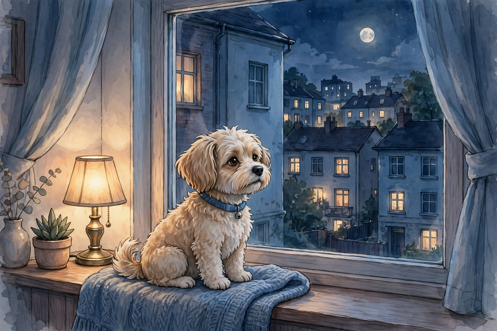

この記事の要点
- 犬の吠え声は、急に始まって、やや高めの音で、何度も繰り返されることが多い音です。
- 吠え声のような突発的な音は、一定のマスキング音だけでは完全に紛れさせることが難しい場合があります。その限界を正直にお伝えします。
- マスキングでできるのは、短い吠え声の目立ち方を少し和らげることまで。過度な期待はしないほうがいい音です。
- 効きにくい場合は、吠える時刻と引き金の記録、耳栓との併用、管理会社への相談が次の一手になります。
- 犬にも飼い主にも事情があります。直接の苦情ではなく、記録と第三者経由の相談が基本です。
⏱ 急いでいる人へ ― 今夜やること3つ
📖 目次
🔊 吠え声の正体
犬の吠え声は、短く鋭い音が、不規則な間隔で繰り返される音です。声の主な成分は、一般に数百Hzから2,000Hz程度の中音域〜やや高めの帯域が中心とされ、鋭さのもとになる高い倍音はそれ以上の帯域まで伸びます。小型犬ほど高く、大型犬ほど低めになる傾向がありますが、あくまで目安で、個体や吠え方によって大きく変わります。
20Hz数百～2,000Hz程度（目安）5000Hz
吠え声のもう一つの特徴は突発性です。静かな状態から一瞬で大きな音が立ち上がり、数回〜数十回続いて、ぱたりと止む。この性質が、マスキングを難しくし、気になり方を強くします。
吠えるきっかけ（引き金）のパターン
吠え声には、きっかけがあることが多いです。代表的なパターンを知っておくと、自分の聞いている吠え声の傾向がつかめます。
| きっかけ | 吠え方の傾向 |
|---|---|
| 玄関チャイム・インターホン、来客や配達 | 短時間に集中して吠える。終われば止むことが多い |
| 窓の外の人影・通行人、他の犬の声 | 外の刺激がある間だけ続く。散歩の時間帯に重なりやすい |
| 飼い主の帰宅・外出の気配 | 朝と夕方など、決まった時間帯に寄りやすい |
| 留守番中の不安や退屈 | 日中や深夜に、長く断続的に続くことがある |
「チャイムのたびに数分」なのか「留守中に何時間も」なのかで、困りごとの形も、相談の進め方も変わってきます。
🐕 なぜ気になるのか
吠え声は、人の注意を引くようにできている音でもあります。もともと吠え声は、仲間や飼い主に何かを知らせるための合図です。聞く側が「何かあったのか」と注意を向けてしまうのは、自然な反応だと言われます。
気になり方を強くする要素は、主に3つあります。
- 予測できないこと ― いつ始まるか分からず、始まってもいつ止むか分かりません。一定のリズムで続く音より、耳は注意を張り続けます。静かになったと思った瞬間にまた鳴る、という間隔の不規則さも疲れのもとです
- 音の立ち上がりが急なこと ― 静かな部屋との落差が大きいため、音量そのもの以上に大きく感じます。夜間は部屋の暗騒音（もともとある小さな音）が下がるので、同じ吠え声でも際立ちます
- 意味のある音として聞こえること ― 無意味なノイズと違い、吠え声は「誰かが何かに反応している音」として耳に入ります。意味を読み取ろうとする分、意識から外しにくいとされます
感じ方には個人差があり、時間帯や建物の構造（木造かRC造か、窓の向きなど）によっても変わります。
🎧 マスキングでできること・できないこと
先に正直にお伝えすると、吠え声はマスキングが難しい音の代表です。足音や話し声のように「帯域の近い音で包む」方法が、そのままでは効きにくい相手です。
できること（目安）
- 部屋の背景音を少し上げることで、短く小さな吠え声の輪郭を和らげる。気づく回数が減る場合があります
- 「静寂→突然の吠え声」という落差を小さくして、驚きにくくする
- 耳栓と併用したときに、残って聞こえる成分を紛れさせやすくする
できないこと
- 大きく鋭い吠え声を消すこと。吠え声のピークは背景音よりずっと大きく、音量をそこまで上げれば、今度はマスキング音自体が負担になります
- 吠えること自体を止めること。マスキングは聞く側の工夫でしかありません
試す場合のやり方
試す場合は、控えめな音量で、一定の音（雨音などの環境音やノイズ）を流してみてください。音量を上げれば解決する、というものではありません。長時間、大きな音量で流し続けることは、耳や睡眠の負担になることもあります。合う音は、聴き比べて探すのが確実です。仕組みの基本はマスキング音の仕組みにまとめています。
🔁 効かないときの次の一手
マスキングで追いつかない場合は、「音を紛らせる」以外の手に移ります。順番に進めるのがおすすめです。
- 記録を付ける ― いつ、何分くらい、どのくらいの頻度で吠えたかを簡単にメモします。きっかけ（チャイム、来客など）も分かれば一緒に。記録があると、パターンが見えるだけでなく、相談のときに感情ではなく事実で話せます（騒音の記録シート）
- 発生パターンを把握する ― 数日〜1週間記録すると、「夕方の配達の時間だけ」「留守中の日中ずっと」など傾向が見えてきます。時間帯が限られるなら、その時間だけ耳栓や別の部屋で過ごす、といった現実的な逃げ方も選べます
- 耳栓などと併用する ― 耳栓で吠え声の鋭い成分を少し弱める方法です。完全に消えはしませんが、「気づいて身構える」回数が減るだけでも楽になることがあります（耳栓とマスキング音の併用）
- 管理会社へ相談する ― 生活に支障が続く場合は、記録を持って管理会社への相談をご検討ください。一般的な流れは「記録 → 管理会社 → 必要に応じて外部の相談窓口」です（対処のフローチャート）。相談の際は「いつ・どれくらい・どう困っているか」を伝えるのが基本で、飼い主への直接の苦情は、関係がこじれることもあるため慎重に考えるのがよいでしょう
このサイトは、法的な判断をするものではありません。具体的な対応に迷う場合は、自治体の相談窓口なども選択肢になります。
🚫 やってはいけないこと
- 壁や床を叩いて知らせる ― 相手には「叩かれた」という事実だけが残り、関係が悪化します。犬が驚いて余計に吠えることもあります
- 仕返しに音を出す・大きな音で吠え声に対抗する ― 自分が加害側になるだけです。マスキング音も、近所に漏れるほどの大音量は避けてください
- 直接怒鳴り込む ― 感情的な対面はトラブルの元です。伝えることがある場合は、管理会社を通じてが原則です
- 犬や飼い主を一方的に悪者と決めつける ― 留守番や体調など、側からは見えない事情があることもあります。記録と相談の場面でも、事実ベースの伝え方のほうが前に進みます
❓ よくある質問
- Q. 吠え声に効くマスキング音はありますか？
- A. 「これで消える」という音はありません。吠え声は突発的で帯域も広いため、マスキングとの相性は良くない音です。できるのは、控えめな背景音で短い吠え声の目立ち方を少し和らげることまでで、効果には個人差・環境差があります。過度な期待はしないほうがいい、というのが正直なところです。
- Q. 夜や早朝だけ吠えるのはなぜですか？
- A. 理由は家庭ごとに違いますが、外の物音や通行人への反応、飼い主の生活リズム（帰宅・外出・散歩の時間）に重なっていることが多いとされます。記録を付けると、自分のケースのパターンが見えてきます。
- Q. 記録はどのくらい付ければいいですか？
- A. まず数日〜1週間、「日付・時刻・続いた時間・気づいたきっかけ」をメモする程度で十分です。完璧な記録より、続けることと、相談のときに渡せる形であることが大事です（記録シートの使い方）。
- Q. 飼い主に直接お願いしてもいいですか？
- A. 関係性によっては穏やかに伝わる場合もありますが、対面の苦情はこじれることもあります。一般には、管理会社を通すほうが安全とされます。このサイトではどちらが正しいといった判断はしません。
⚠️ 注意
このページの内容は、吠え声への対策を保証するものではありません。帯域や効果の説明はすべて目安で、個人差・環境差があります。近隣とのトラブルについては、法律の判断が必要な場合があります。このサイトの内容は、法律の判断ではありません。また、音への過敏さや眠れない状態が長く続く場合は、医療機関への相談もご検討ください（このサイトは医療の判断もしません）。